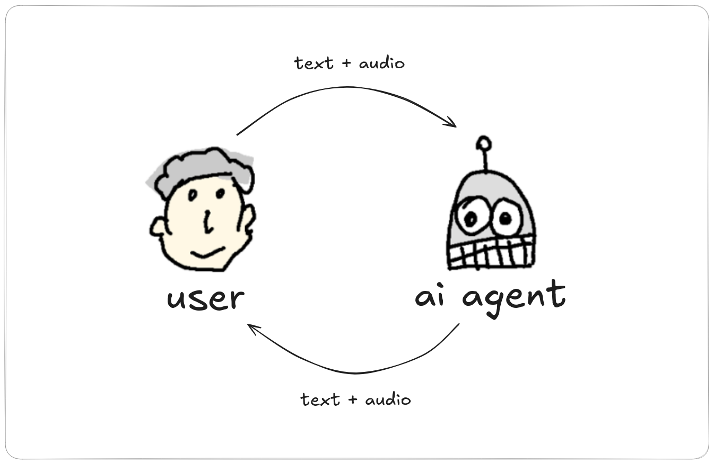
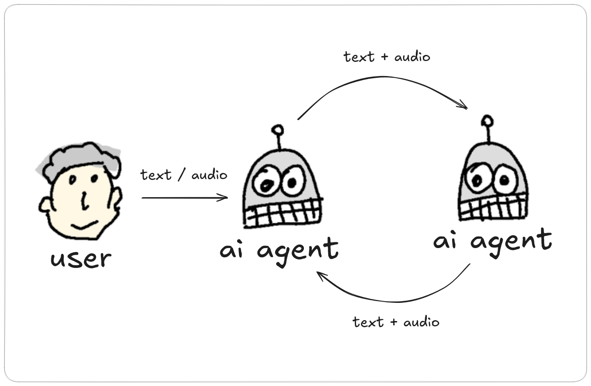
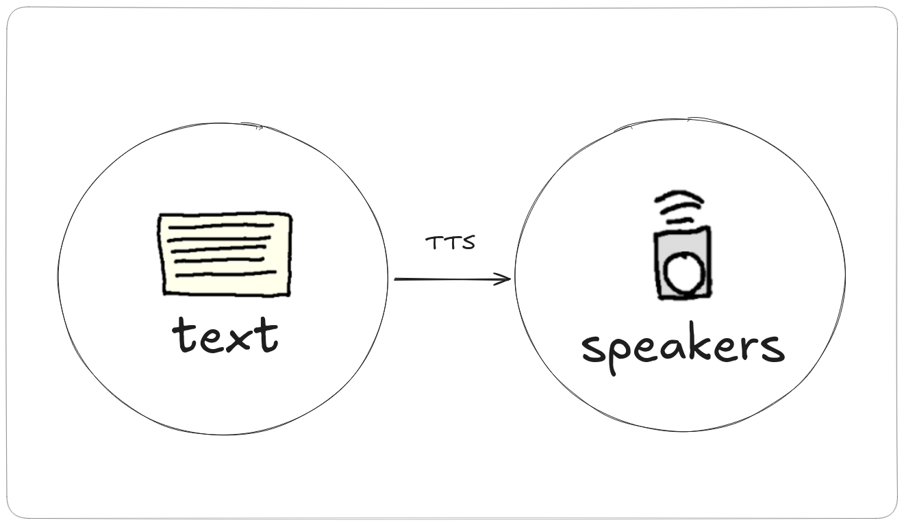

The final AI voice conversational system running in your terminal. This page
covers installation, configuration, and the main interaction modes.
Configuration
On first run, vtmate creates ~/.vtmate/settings
with two agents if it does not exist. You can define as many agents as
you want, swap them in realtime with the arrow keys, load alternate
settings files with -c, and list voices with
vtmate --list-voices.
Example agent configuration
[agent]
name = main agent
language = en
voice = bf_alice
voice_speed = 1.1
provider = ollama
baseurl = http://localhost:8080
model = gpt-oss-20b
system_prompt = You are a smart ai assistant.
sound_threshold_peak = 0.1
end_silence_ms = 2000
tts = kokoro
ptt = false
whisper_model_path = ~/.whisper-models/ggml-tiny.bin
Load an alternate settings file
vtmate -c philosophers-settings.txt
List available voices
vtmate --list-voices
Conversation Mode
The live loop is RECORD -> STT -> LLM -> TTS -> PLAYBACK.
Recording starts when audio crosses the configured threshold and stops on
silence, unless push-to-talk is enabled. You can pause recording with
SPACE, stop playback with one ESCAPE, interrupt
the full response with two ESCAPE presses, swap agents with
ARROW_LEFT/ARROW_RIGHT, and adjust voice speed
with ARROW_UP/ARROW_DOWN.

Default live conversation and save audio plus text
vtmate -s
Start with a specific agent
vtmate --agent "main agent"
Start with an initial prompt from the CLI
vtmate -p "Are we alone in the galaxy?"
Start with an initial prompt from a file
vtmate -i myprompt.txt
Start with an initial prompt from stdin
echo "How to fly without wings?" | vtmate -i -
Debate Mode
Debate mode lets two agents talk to each other from an initial prompt.
It is useful for adversarial reasoning or role-based exploration. You can
interrupt and redirect the discussion at any point. From conversation mode
you can also start or stop a debate with Control+D.

Start a debate from an initial subject
vtmate --debate "God" "Devil" "How to succeed in life?"
Start a debate with a prompt from a file
vtmate --debate "God" "Devil" -i myprompt.txt
Start a debate with a prompt from stdin
echo "Lets discuss the permissions of this files:" | vtmate --debate "Unix administrator" "Security Expert" -i -
Save the debate as audio plus text
vtmate --debate "Aristoteles" "Ptahhotep" "Who was the first philosofer?" -s
Reading Mode
Reading mode converts file or stdin text into spoken output phrase by
phrase using the selected agent voice. In this mode, the relevant agent
settings are tts, voice, and
language. Use ARROW_UP and
ARROW_DOWN to move between phrases, and SPACE
to stop or resume playback.

Read from a text file
vtmate -r myfile.txt --agent "main agent"
Read from stdin
echo "Hello. How are you?" | vtmate -r - --agent "main agent"
Single Run Mode
Single run mode gets one response and exits. It is useful for automation,
shell pipelines, and scripts. You can provide the prompt directly, from a
file, or from stdin, and optionally save the result as both audio and text.
Run a single direct prompt
vtmate -q -p "Explain me the Zettelkasten Method"
Run a prompt from a file
vtmate -q -i myprompt.txt
Run a prompt from stdin
echo "Is $(date) a national holiday day in Spain?" | vtmate -q -i -
Save the result as audio plus text
echo "Can you find any suspicious processes in the next list? If so, why?\n\n $(ps aux | head -20)" | vtmate -q -i - -s